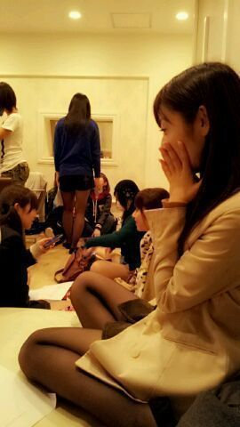

おはろってぃ〜*´∀`*
今日は 「乃木どこ?」の
収録だったよ *´ω`*))
朝早くから頑張ったよん´∀`)〃
早く新曲 liveでしたい〃ω〃
そんな気持ち。

↑昨晩撮った写メ♪
アットホームでしょ?
レコーディングの時。
皆で暮らしたら
こんな感じになるんだ ・ω・*))
うるさい時は
それぞれ皆
キーキーゆうけど
静かん時は皆
ダラーん。ってなるんやろうなあ
( ´ω` )笑
ちなみにまひろ
隅っこにいるやつ。(・ω・)/
・・・
ソファ-で うつむけで
だらーん。てしてたら
お尻さんの上で
とまと♪が頭おいて
「まひろのお尻気持ちぃ〜(・ω・)」
って言ってくれた´ω`))
うししっ (／ω＼)‥
ほんなら せーたんも
まひろの上におる (・ヾ・)
まひろの頭の上に
頭のっけておって
器用なことするなあ〜*^ω^*
って思いつつ、
まひろは バタン ... >┼Ο シ〜ン。
まひろの上であらゆる人が
寝てる。
ふんふんふぅ〜ん。
今日,あーしらは
朝 )
海老かつサンド
かぼちゃのスープ
等々‥
昼)
鮭のお弁当。
夜)
カレー,じゃがいもだったよん♪
ってな感じで
皆様,
おやすみなさぁ〜い ＼(^o^)／
のし。